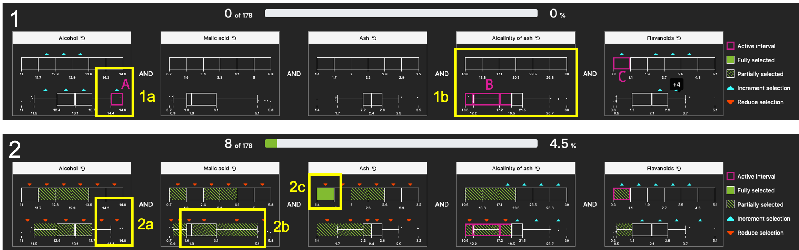

CrossWidgets: Enhancing Complex Data Selections through Modular Multi Attribute Selectors
Abstract
Filtering is one of the basic interaction techniques in Information Visualization, with the main objective of limiting the amount of displayed information using constraints on attribute values. Research focused on direct manipulation selection means or on simple interactors like sliders or check-boxes: while the interaction with a single attribute is, in principle, straightforward, getting an understanding of the relationship between multiple attribute constraints and the actual selection might be a complex task. To cope with this problem, usually referred as cross-filtering, the paper provides a general definition of the structure of a filter, based on domain values and data distribution, the identification of visual feedbacks on the relationship between filters status and the current selection, and guidance means to help in fulfilling the requested selection. Then, leveraging on the definition of these design elements, the paper proposes CrossWidgets, modular attribute selectors that provide the user with feedback and guidance during complex interaction with multiple attributes. An initial controlled experiment demonstrates the benefits that CrossWidgets provide to cross-filtering activities.